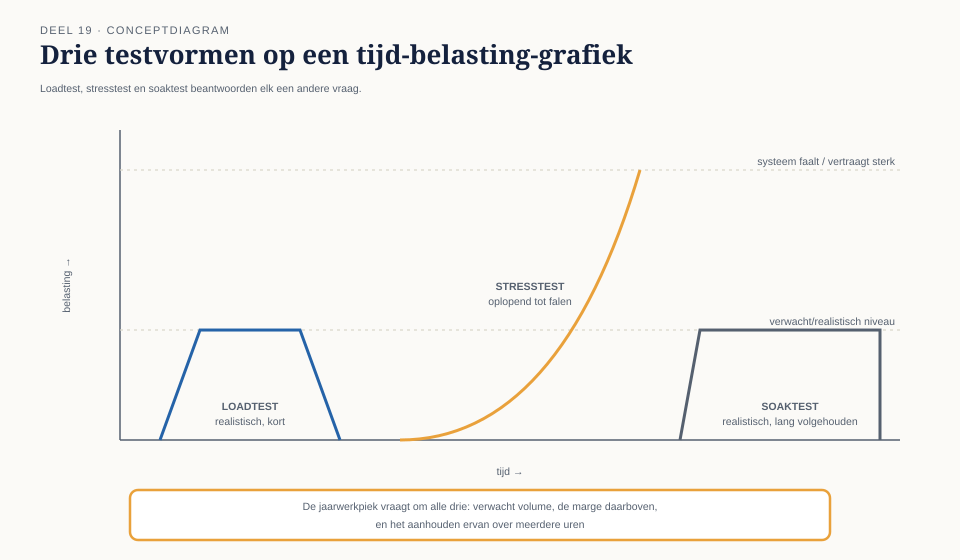
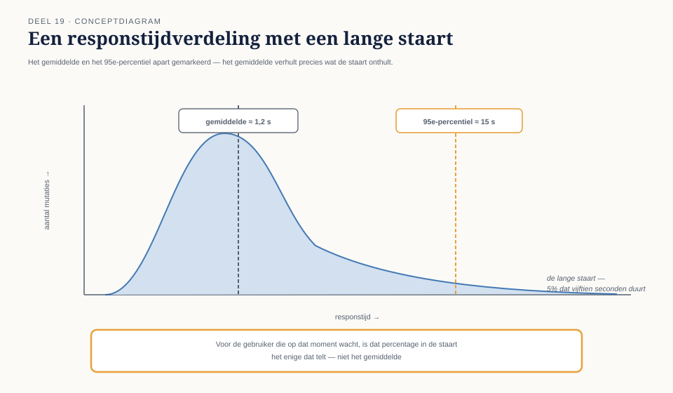

Deel 19 — Niet-functioneel testen
Slidedeck · Ductus-cursus Testen en Kwaliteitsborging · niveau 2 · deel 19 van 30 · 17 slides
Twee dagdelen.
Slide 1 — Titel
Niet-functioneel testen
Deel 19 · Niveau 2 Professional · Twee dagdelen
Slide 2 — Sectie
Dagdeel A: performance
Slide 3 — Statement
Functionele tests bewijzen:
één mutatie wordt correct verwerkt.
Niet-functionele tests bewijzen:
duizend tegelijk doen dat nog steeds.
Slide 4 — Figuur

Slide 5 — Opdracht
Opdracht 19.1 — Welke performancetest?
Drie vragen, drie testvormen.
15 minuten, individueel.
Slide 6 — Statement
Gemiddelde responstijd: 1,2 seconden.
95e-percentiel: 15 seconden.
Voor wie op dat moment wacht, telt alleen dat laatste.
Slide 7 — Figuur

Slide 8 — Opdracht
Opdracht 19.2 + 19.3
Lees de verdeling. Ontwerp de
jaarwerkpiek-teststrategie.
45 minuten.
Slide 9 — Sectie
Dagdeel B: betrouwbaarheid en beveiliging
Slide 10 — Bullets
Betrouwbaarheid, drie vragen
- Beschikbaarheid — welk deel van de tijd bruikbaar?
- Foutbestendigheid — wat als een schakel uitvalt?
- Herstelbaarheid — hoe snel, hoe volledig?
Slide 11 — Statement
Chaostesten: niet afwachten of een storing
ooit vanzelf optreedt —
er actief een veroorzaken
om te zien of de verdediging werkt.
Slide 12 — Opdracht
Opdracht 19.4 — Ontwerp een herstelscenario
De kernadministratie-verbinding valt uit
tijdens de batch. Wat moet aantoonbaar gebeuren?
Een gecontroleerde herhaling van de echte WGP 2.0-storing.
20 minuten, groepjes van drie.
Slide 13 — Bullets
Security — eerste laag
- Invoervalidatie
- Autorisatie
- Sessiebeheer
- Foutmeldingen die niets prijsgeven
Slide 14 — Opdracht
Opdracht 19.5 — Eerste laag beveiliging
Vier punten, elk een concreet testgeval
op het deeltijdscherm.
20 minuten, individueel.
Slide 15 — Statement
Deze eerste laag vindt het meest voorkomende.
Diepgaander werk vraagt een specialist —
en het herkennen van die grens is zelf een vaardigheid.
Slide 16 — Bullets
TMAP-lens
- Niet-functionele indicatoren horen in VOICE
- Een percentiel is pas betekenisvol gekoppeld aan de waarde die het dient
Slide 17 — Statement
Volgende keer: testen met generatieve AI
Zelfstandig leesbaar — los aanbiedbaar.